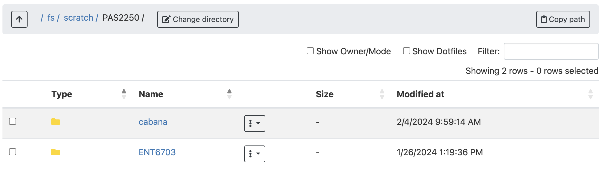
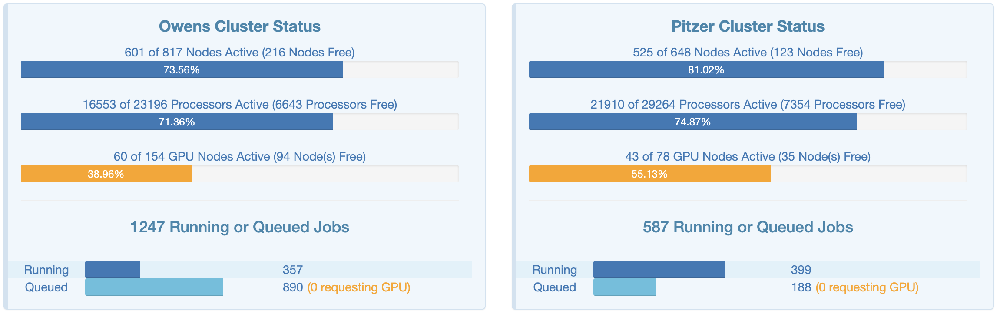
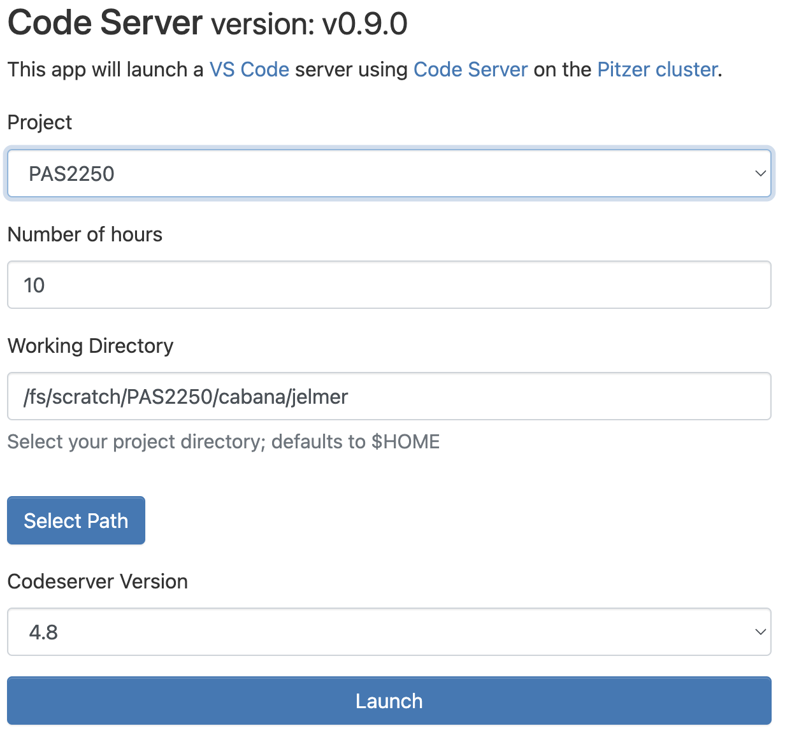
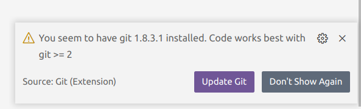

Intro to the Ohio Supercomputer Center (OSC)

1 Introduction
1.1 Computational infrastructure overview
Due in large part to the amount of data involved, a laptop or desktop computer is often not sufficient to work with genomics data.
Additionally, most of the specialized programs that help you analyze your data can only be run through a “command-line interface”.
Therefore, a typical computational infrastructure to do what we may call “command-line genomics” involves:
- A supercomputer1 — in our case, the Ohio Supercomputer Center (OSC) [this session]
- A text editor — I recommend and will demonstrate VS Code [next session]
- The Unix shell (terminal) [third session]
- R (or perhaps Python) for interactive statistical analysis and visualization [this afternoon]
This session will provide an introduction to supercomputers in general and to the Ohio Supercomputer Center (OSC) specifically. In all of today’s and tomorrow’s sessions at this workshop, we’ll continue to work at OSC, so you will get a fair bit of experience with working at a supercomputer.
1.2 Supercomputers
A supercomputer (also known as a “compute cluster” or simply a “cluster”) consists of many computers that are connected by a high-speed network, and that can be accessed remotely by its users. In more general terms, supercomputers provide high-performance computing (HPC) resources.
This is what Owens, one of the OSC supercomputers, physically looks like:

Here are some possible reasons to use a supercomputer instead of your own laptop or desktop:
- Your analyses take a long time to run, need large numbers of CPUs, or a large amount of memory.
- You need to run some analyses many times.
- You need to store a lot of data.
- Your analyses require specialized hardware, such as GPUs.
- Your analyses require software available only for the Linux operating system, but you use Windows.
When you’re working with genomic data, many of these reasons typically apply. This can make it hard or simply impossible to do all your work on your personal workstation, and supercomputers provide a solution.
Compared to command-line computing on a laptop or desktop, the following aspects are different when working on a supercomputer like at OSC:
- Login versus compute nodes
“Login nodes”, the nodes you end up on after logging in, are not meant for heavy computing and you have to request access to “compute nodes” to run most analyses. - “Non-interactive” computing is common
It is common to write and “submit” scripts to a queue instead of running programs interactively. - Software
You generally can’t install “the regular way”, and a lot of installed software needs to be “loaded” (as we’ll see today). - Operating system
Supercomputers run on the Linux operating system
1.3 The Ohio Supercomputer Center (OSC)
The Ohio Supercomputer Center (OSC) is a facility provided by the state of Ohio in the US. It has two supercomputers, lots of storage space, and an excellent infrastructure for accessing these resources.
OSC has three main websites — we will mostly or only use the first:
- https://ondemand.osc.edu: A web portal to use OSC resources through your browser (login needed).
- https://my.osc.edu: A site to manage your account and OSC Projects you are an admin for (login needed).
- https://osc.edu: General website with information about the supercomputers, installed software, and usage.
Access to OSC’s computing power and storage space goes through OSC “Projects”.
- A project can be tied to a research project or lab, or be educational like the project
PAS2250you have been added to. - Each project has a budget in terms of “compute hours” and storage space.
- As a user, it’s possible to be a member of multiple different projects.
2 The structure of a supercomputer center
2.1 Terminology
Let’s start with some terminology, going from smaller things to bigger things:
- Core / Processor / CPU / Thread
Components of a computer (node) that can each (semi-)indendepently be asked to perform a computing task like running a bioinformatics program. For our purposes, we can treat these terms as synonyms. - Node
A single computer that is a part of a supercomputer and has dozens of cores2. - Supercomputer / Cluster
A collection of computers connected by a high-speed network. OSC has two: “Pitzer” and “Owens”. - Supercomputer Center
A facility like OSC that has one or more supercomputers.

2.2 Supercomputer components
We can think of a supercomputer as having three main parts:
- File Systems: Where files are stored (these are shared between the two clusters!)
- Login Nodes: The handful of computers everyone shares after logging in
- Compute Nodes: The many computers you can reserve to run your analyses

Let’s take those in order.
File systems
OSC has several distinct file systems — we will only see the following two:
| File system | Located within | Quota | Backed up? | Auto-purged? | One for each… |
|---|---|---|---|---|---|
| Home | /users/ |
500 GB / 1 M files | Yes | No | User |
| Scratch | /fs/scratch/ |
100 TB | No | After 90 days | OSC Project |
In today’s and tomorrow’s sessions, we will be working in the scratch directory of the OSC Project PAS2250: /fs/scratch/PAS22503.
We’ll talk about all of this more in upcoming sessions, but to clarify some of the terms and concepts mentioned here:
- “Directory” (or “dir” for short) is a commonly used term in Unix that just means “folder”.
- In the “Located within” column in the table above, the leading forward slash
/signifies the system’s “root” (top-level) directory, and forward slashes are also used to separate directories (unlike in Windows, which uses backslashes).
While OSC’s current two clusters, Owens and Pitzer, are largely separate, they do share the same File System. This means that you can access your files in the exact same way regardless of which supercomputer you have connected to.
Login Nodes
Login nodes are set aside as an initial landing spot for everyone who logs in to a supercomputer. There are only a handful of them on each supercomputer, and they are shared among everyone and cannot be “reserved”.
As such, login nodes are meant only to do things like organizing your files and creating scripts for compute jobs, and are not meant for any serious computing, which should be done on the compute nodes.
Compute Nodes
Data processing and analysis is done on compute nodes. You can only use compute nodes after putting in a request for resources (a “job”). A job scheduler4 will then assign resources to your request.
Requests for compute node jobs can be made through the OnDemand website or with commands like srun and sbatch.
Jobs can either be interactive (like running Rstudio or interactive shell jobs) or be a “batch” job (sending a script away to be run on a compute node). Only with interactive jobs do you “move” to a compute node yourself.
Compute nodes come in different shapes and sizes. You mostly don’t have to worry about this but sometimes non-standard nodes are need, such as when you need a lot of RAM memory or need GPUs5.
3 OSC OnDemand
The OSC OnDemand web portal allows you to use a web browser to access OSC resources such as:
- A file browser where you can also create and rename folders and files, etc.
- A Unix shell
- A host of “Interactive Apps”: programs such as RStudio, Jupyter, VS Code and QGIS.
Go to https://ondemand.osc.edu and log in (use the box on the left-hand side)
You should see a landing page similar to the one below:

We will now go through some of the dropdown menus in the blue bar along the top.
3.1 Files: File system access
Hovering over the Files dropdown menu gives a list of directories that you have access to. If your account is brand new, and you were added to PAS2250, you should only have two directories listed6:
- A Home directory (starts with
/users/) - A project “scratch” directory (starts with
/fs/scratch/)PAS2250
Select the PAS2250 scratch directory, /fs/scratch/PAS2250, where we’ll be working today and next week:

Once there, you should see a list of directories and files (here: just a single dir), and you can click on the directories to explore the contents further:

This interface is much like the file browser on your own computer, so you can also create, delete, move and copy files and folders, and even upload (from your computer to OSC) and download (from OSC your computer) files7 — see the buttons across the top. 8: Though this is not meant for large (>1 GB) transfers. Different methods are available for those but are outside the scope of this introductions.
Your Turn: Create your own folder
- Click your way into
ENT6703within/fs/scratch/PAS2250if you’re not already there. - You should (at least) see directories/folders named
shareandjelmer. - Create your own folder by clicking the
New Directorybutton at the top. - Please give it the exact same name as your OSC username (including any capitalization).
(You can see what your username is by looking at the right side of the blue top bar:)
3.2 Clusters: Unix shell access
Moving on to “Clusters”, we’ll start with the item at the bottom of that dropdown menu, “System Status”:

This page shows an overview of the current usage of the two clusters, which might help to decide which cluster you want to use and set some expectations for compute job waiting times:

Interacting with a supercomputer is most commonly done using a Unix shell, and we’ll learn about the basics of doing so soon. Under the Clusters dropdown menu, you can access a Unix shell either on Owens or Pitzer:

I’m selecting a shell on the Pitzer supercomputer, which will open a new browser tab looking like this:

However, from now on, we’ll be accessing a Unix shell inside the VS Code text editor, which also gives us some additional functionality in a user-friendly way.
3.3 Interactive Apps
We can access programs with Graphical User Interfaces (GUIs; point-and-click interfaces) via the Interactive Apps dropdown menu — let’s select VS Code using the “Code Server” button:

Because Interactive Apps like VS Code and RStudio run on compute nodes (not login nodes), which need to be “reserved”, we have to fill out a form and specify the following details (see also the screenshot below):
| Option | Value |
|---|---|
The OSC Project that should be billed for the compute resource usage |
PAS2250 |
The Number of hours we want to make a reservation for9 |
10 |
The Working Directory10 for the program |
your newly-created personal folder in /fs/scratch/PAS2250/cabana (e.g. /fs/scratch/PAS2250/cabana/jelmer) |
The Codeserver Version |
4.8 |

Click on Launch at the bottom, which will send your request to the “compute job” scheduler. First, your job will be “Queued” — that is, waiting for the job scheduler to allocate resources on the compute nodes to it:

Your job is typically granted resources within a few seconds (the card will then say “Starting”), and be ready for usage (“Running”) in another couple of seconds:

Then, click on the blue Connect to VS Code button to open VS Code in a new browser tab. When VS Code opens, you may get these two pop-ups — click “Yes” (and check the box) and “Don’t Show Again”, respectively:


4 Further reading
OSC’s learning resources
Acknowledgements
This page uses material from an OSC Introduction written by Mike Sovic and from OSC’s Kate Cahill Software Carpentry introduction to OSC.
Footnotes
Cloud computing is an alternative, but won’t be covered here.↩︎
I.e., these nodes tend to be more powerful than a personal laptop or desktop↩︎
If you’d be doing research on OSC, though, you would mostly interact with the Project directories: this is because for most files, you’ll want a permanent and backed-up location (i.e., not Scratch or Compute storage), and the Home directory offers relatively limited storage as well as challenges with file sharing.↩︎
OSC uses the Slurm job scheduler↩︎
GPUs are e.g. used for Nanopore basecalling↩︎
If you had been added to another project than
PAS2250, you would have had at least 3:PAS2250does not have a “project dir”, but most projects do↩︎Cloud computing is an alternative, but won’t be covered here.↩︎
Cloud computing is an alternative, but won’t be covered here.↩︎
Note that we’ll be kicked off as soon as that amount of time has passed!↩︎
This will be your starting location in the file system, we’ll talk more about working dirs in a little bit.↩︎